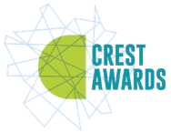

Designed and build an affordable, automated irrigation system that intelligently dispenses water based on soil moisture levels.
View project →
Designed, built and filed for patent a portable bottle filter for arsenic, other heavy metals and turbidity from drinking water.
View project →
Transformed plastic waste into sustainable, affordable eco-friendly building material. Meeting SDG goals.
View project →
Authored a book that explains science concepts through sports.
View project →Set up a community system for removal of microplastics from water using biopolymer — Moringa.
View project →